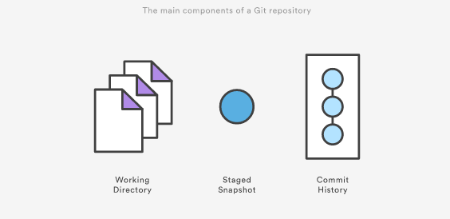
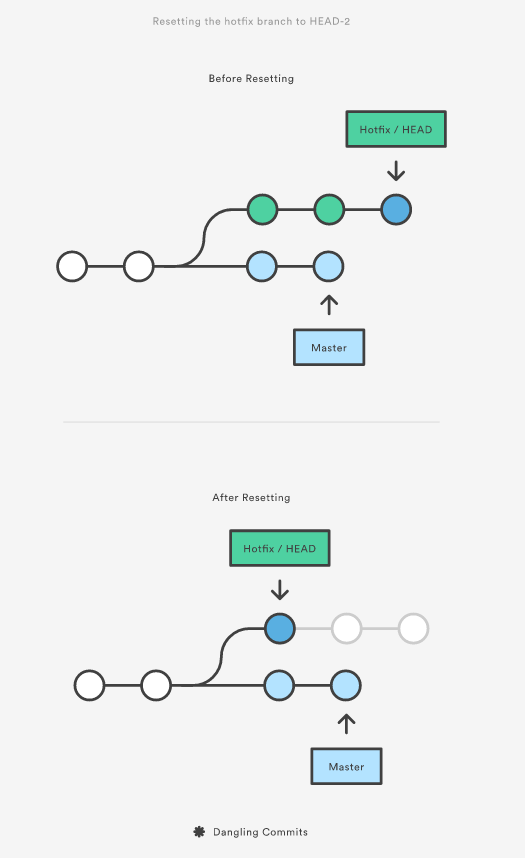
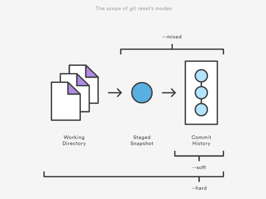
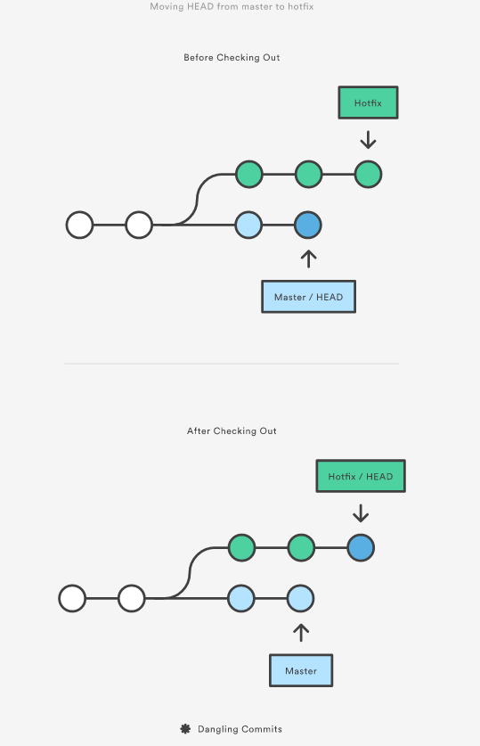
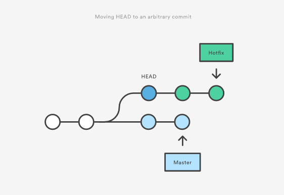
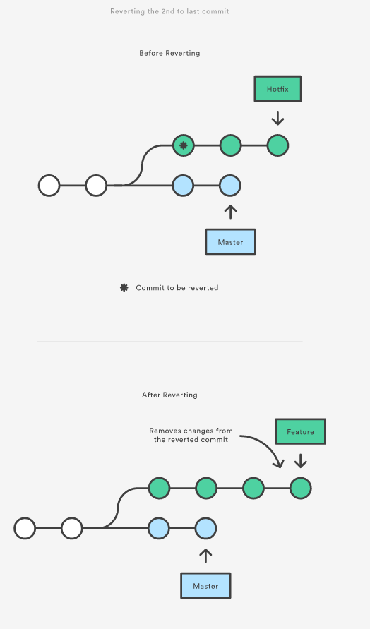

The git reset, git checkout and git revert let you to undo changes in repository, and the first two can be use to manipulate either commits or individual files.
The image bellow will help to think about each command in terms of their effect on the three main components of Git workflow. Keep this components always in mind when you’re working with this commands.

Reset
On the commit-level, resetting is way to move a tip of a branch to a different commit. This can be used to remove commits from the current branch. Following command moves branch backwards by two commits:
git checkout hotfix
git reset HEAD~2
In other words, you’re saying that you want to throw away this commits:

This usage of git reset is a simple way to undo changes that haven’t been shared with any one else. I use this command when I’ve started working on feature find myself thinking that, “Oh crap, what am I doing? I should start over”.
There are following flags:
--soft- thestageandworkingareas are not altered in this way--mixed- only thestagedarea is affected. This is option be default--hard- thestageandworkingare both updated to match the specific commit
It’s easer to thing of these modes by their scope:

The command is often used with HEAD or with serious of commits hash as the parameter:
# has effect on unstaging all changes, but leaves them in a working directory
git reset --mixed HEAD
# completely throw away all changes
git reset --hard HEAD
# reset a specif commit
git reset --hard <commit-hash>
# reset a series using ancestor notation
git reset dev~5..dev
# reset a series using commit hashes
git reset --no-edit ffffffff..12345678
Be careful when passing other than HEAD, since this re-writes the current branch history
Checkout
When passed a branch name, it lets you to switch between branches:
git checkout hotfix
Internally it moves HEAD to a different branch updates the working directory to match. Since this has a potential to overwrite local changes, Git forces you to commit or stash any changes in a working directory. Unlike git reset it doesn’t move any branches around.

I can also check arbitrary commits by passing the commit reference of the branch:
git checkout HEAD~2

This is useful for quickly inspecting an old version of your project. However, since there are no reference to the current HEAD, this puts you in a detached HEAD state. This can be dangerous if you start adding new commits, because there won’t be a way to get back them after you switch to an another branch. For this reason, you should always create a new branch before adding commits to a detached HEAD.
Revert
Reverting undoes a commit by creating a new commit. This is a safe way to undo changes, as it has no change of re-writing the commit history. For example, the following command will figure out the changes in the 2nd to last commit, create a new commit to undoing these changes:
git checkout hotfix
git revert HEAD~2
That can be visualized as following:

Contrast this with git reset, which does alter the existing commit history. For this reason git revert should be used to undo changes on a public branch and git reset should be reserved for undoing changes on a private branch.
You can also think of a git revert as a tool for undoing committed changes, while git reset HEAD is for undoing uncommitted changes.
If I just want to revert with a specific commit I use --no-commit:
# -n is shortcut for --no-commit
git revert -n <commit hash>
git commit -m 'the commit message'
Another flow can be if you want to revert multiple commits:
git revert --no-commit <commit hash A>
git revert --no-commit <commit hash B>
git revert --no-commit <commit hash C>
git commit -m 'the commit message'
If there are sequence of commits which I want to revert:
git revert --no-commit HEAD~3..
# or
git revert --no-commit A..HEAD
git commit -m 'the commit message'
The problem can be appeared when you want to revert a merge commit. The -m parameter specified the parent number. This is need because a merge commit has more than one parent, and Git doesn’t know which parent was the mainline, and which parent was the branch you want to un-merge.
git revert -m 1 <commit-hash>
git commit -m "Reverting the last merge-commit which messed the repo."
git push -u origin master
The dedicating answer about how to revert merged commit which has been pushed on remote
Save my day: